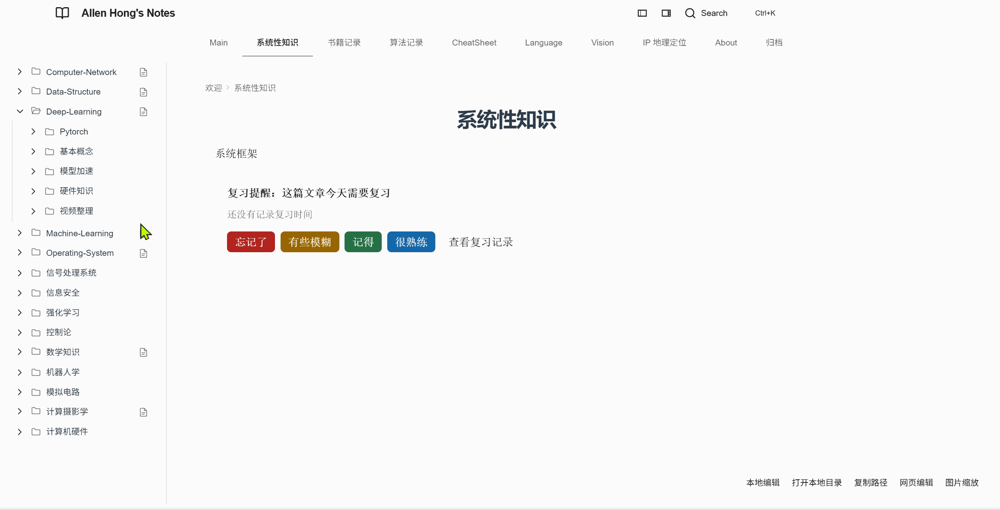

彻底解决侧边栏闪烁
AKA. 共享侧边栏与局部导航机制
1. 目标与结论
之前对侧边栏的更新已经有过一些优化记录，但是发现侧边栏还是会闪烁。
总而言之，最终修改的逻辑是：同一顶部栏目内切换文章时，左侧栏和目录树应继续使用原来的 DOM 节点，只更新当前文章高亮，并展开所需的祖先目录。
最终效果：

2. 以前有 sessionStorage，侧边栏仍会闪烁
原因：即使命中缓存，只要重新创建了 DOM，仍然可能看到闪烁。
2.1 缓存 HTML 与保留 DOM 是两件事
旧流程：
点击另一篇文章
→ 浏览器加载新文档，卸载旧文档
→ 新文档出现侧栏占位内容
→ 从 sessionStorage 读取目录 HTML 字符串
→ innerHTML 创建一套新的目录节点
→ 设置高亮、展开目录、恢复滚动位置
缓存能够减少目录文件的网络请求，但旧节点已经随着文档卸载而消失。浏览器仍需要解析 HTML、创建节点、绑定事件、计算布局和绘制；恢复宽度、展开状态或滚动位置的时机也可能晚于第一帧。
即使不刷新整个文档，在一个已有容器里再次执行下面的语句，也会替换其原有子节点：
container.innerHTML = cached.html;
2.2 当前正常切换流程
点击另一篇文章
→ 主题拦截符合条件的站内链接
→ 获取并解析目标页面
→ 只替换文章所属的页面容器
→ document$ 通知页面已更新
→ 读取新页面要求的共享目录地址
→ 地址相同：保留目录节点，只调整高亮和必要的展开状态
左侧栏不需要先消失，再从缓存中恢复。
3. 页面结构：左侧栏在外，文章容器在内
源码 base.html 的页面结构简化后如下，省略了头部、部分嵌套容器和其他主题元素：
<!-- 独立存在的左侧栏 -->
<div class="custom-sidebar-shell custom-page-shell md-grid">
<div class="md-sidebar md-sidebar--primary" data-md-type="navigation">
<div class="md-sidebar__scrollwrap">
<div class="md-sidebar__inner">
<div data-shared-navigation="..." data-site-root=".../">
<!-- 目录树 -->
</div>
</div>
</div>
</div>
</div>
<!-- 主题局部导航会替换的区域 -->
<div class="md-container"
data-md-component="container"
data-shared-navigation-target="..."
data-site-root=".../"
data-navigation-hidden="false">
<!-- 顶部栏目、正文、右侧目录、页脚等 -->
</div>
左侧栏不再是 [data-md-component="container"] 的后代。因此，主题替换目标页面容器时，不会连同左侧栏一起替换。
左侧栏也去掉了原先的 data-md-component="sidebar"，不再参加主题对这类组件的每页重新初始化。主题原有侧栏初始化会设置尺寸、位置，并尝试滚动到当前文章；本项目已经用自己的固定布局和共享导航脚本管理左栏。
右侧文章目录仍然属于可替换区域，并由主题管理，因为它需要随文章变化。
4. 浏览器运行阶段：如何判断目录是否相同
主要由 shared-navigation.js 实现，核心判断依据有三个属性：
| 属性 | 用途 |
|---|---|
data-shared-navigation-target |
新文章需要的共享目录资源地址 |
data-site-root |
解析共享目录内部相对链接、图片地址时使用的站点根路径 |
data-navigation-hidden |
表达目标页面是否通过元数据隐藏左侧导航 |
假设 A 是 /Main/one/，B 是 /Main/Nested/two/，下面说明打开 A 和 B 的过程。
4.1 打开文章 A
此时浏览器地址栏是：
window.location.href
// "http://127.0.0.1:8000/Main/one/"
A 页面 HTML 中的属性是：
<div
data-md-component="container"
data-shared-navigation-target="../../navigation/shared/group-1-a1b2c3d4e5f6.html"
>
<!-- 文章 A -->
</div>
脚本读取属性并计算完整地址：
var target = document.querySelector('[data-shared-navigation-target]');
target.dataset.sharedNavigationTarget
// "../../navigation/shared/group-1-a1b2c3d4e5f6.html"
var url = new URL(
target.dataset.sharedNavigationTarget,
window.location.href
).href;
// 等价于：
new URL(
"../../navigation/shared/group-1-a1b2c3d4e5f6.html",
"http://127.0.0.1:8000/Main/one/"
).href;
// 结果：
// "http://127.0.0.1:8000/navigation/shared/group-1-a1b2c3d4e5f6.html"
首次加载时，目录容器还没有记录加载地址：
container.dataset.navigationLoaded
// undefined
container.dataset.navigationLoaded === url
// false
因此需要加载目录。加载成功后执行 render()，装入左侧目录：
container.innerHTML = html;
container.dataset.navigationLoaded = url;
// "http://127.0.0.1:8000/navigation/shared/group-1-a1b2c3d4e5f6.html"
4.2 切换文章 B 时文章区域先被替换
设置中开启了 navigation.instant 后，此时主题会先获取新页面 HTML，找到其中的页面容器并替换，最后会通过 document$ 发出页面更新通知。简化后的代码如下：
// 获取 B 的完整页面 HTML
const html = await fetch(B的地址).then(response => response.text());
// 解析成一个暂时没有显示在页面上的文档
const nextDocument = new DOMParser().parseFromString(html, "text/html");
// 找到当前页面中的容器
const oldContainer = document.querySelector(
'[data-md-component="container"]'
);
// 找到 B 页面中的对应容器
const newContainer = nextDocument.querySelector(
'[data-md-component="container"]'
);
// 用 B 的整个容器替换 A 的容器
oldContainer.replaceWith(newContainer);
替换后，主题接着通过 document$ 发出页面更新通知。我们的脚本已经订阅了它：
document$.subscribe(init);
PS: document$ 是主题提供的“页面更新通知流”，技术上叫 RxJS Observable。它不是 JavaScript 或浏览器自带的对象。我们通过 subscribe() 告诉主题：“页面更新后，运行这个函数。” 名字末尾的 $ 只是常见命名习惯，表示“这是一个通知流”，没有特殊语法含义。
于是此时运行目录的 init()：
function init() {
// 此时读到的已经是 B 的容器
var target = document.querySelector(
'[data-shared-navigation-target]'
);
// 后面是目录的加载逻辑
}
外面的 custom-sidebar-shell 没被碰到，原目录仍留在页面上。
4.3 切换文章 B 后目录的加载逻辑
地址变成：
window.location.href
// "http://127.0.0.1:8000/Main/Nested/two/"
文章区域被替换为 B 的 HTML，其属性也随之更新：
<div
data-md-component="container"
data-shared-navigation-target="../../../navigation/shared/group-1-a1b2c3d4e5f6.html"
>
<!-- 文章 B -->
</div>
和 4.1 一样，脚本会计算目标目录的完整地址：
var target = document.querySelector('[data-shared-navigation-target]');
var url = new URL(
target.dataset.sharedNavigationTarget,
window.location.href
).href;
// 等价于：
new URL(
"../../../navigation/shared/group-1-a1b2c3d4e5f6.html",
"http://127.0.0.1:8000/Main/Nested/two/"
).href;
// 结果仍然是：
// "http://127.0.0.1:8000/navigation/shared/group-1-a1b2c3d4e5f6.html"
左侧目录容器没有被替换，所以还记着打开 A 时写入的值：
if (container.dataset.navigationLoaded === url) {
delete container.dataset.navigationLoading;
activate(container, root); // 高亮从 A 移到 B，展开 B 的祖先目录
return; // 跳过目录加载与 innerHTML 替换
}
4.4 讨论
一共三种状态：
| 条件 | 处理 |
|---|---|
| 已加载地址等于目标地址 | 复用目录树，运行 activate() 后返回 |
| 目标地址已经在加载中 | 不重复发起同一请求 |
| 目标地址与已加载地址不同 | 尝试缓存，未命中再请求目录 HTML |
activate() 的主要工作是：
- 将目录中的链接和图片地址相对于站点根路径解析为绝对地址。
- 清除旧的
.md-nav__link--active、.md-nav__item--active和对应的aria-current。 - 找到与当前页面同源、路径匹配的文章链接。
- 给它添加
.md-nav__link--active与aria-current="page"。 - 沿祖先导航项向上设置活动状态，并勾选尚未展开的祖先开关。
- 对程序修改的展开开关触发
change，同步展开按钮和导航的辅助属性。
页面路径匹配会进行 URL 解码、把末尾 /index.html 视为目录首页，并忽略末尾多余斜杠。当前实现按路径匹配，不把查询参数和文章锚点作为独立目录项。
5. 其他繁琐细节
5.1 同栏目滚动位置主要靠节点保留
同栏目切换时，.md-sidebar__scrollwrap 没有被替换，scrollTop 随同一个元素继续存在，无需先归零再从缓存恢复。
这不意味着数值在所有操作下绝对不变。例如浏览器为了把被点击的链接滚动到可见区域，或者某个目录展开后内容高度改变，都可能调整滚动位置。验收重点是避免切页额外引入一次重建和重置。
5.2 整页加载时仍有滚动恢复脚本
sidebar-scroll-position.js 使用 CUSTOM_SIDEBAR_SCROLL_TOP：
- 在
pagehide保存滚动位置。 - 首次执行及
shared-navigation-ready后尝试恢复。 - 在
DOMContentLoaded后通过两次动画帧再次恢复，以等待初始布局。
这是整页加载或目录重建时的补充。当前保存的是一个位置值，没有按栏目分别保存滚动历史；普通同栏目局部切换也不会触发 pagehide。
5.3 未转义的 & 导致策略失效
有一个目录是 code&report/，结果这个目录导致上面整个策略失效了。
因为 XML 把 & 当作特殊引用的开头，比如 < 表示 <，比如 & 表示 &。
主题会先把所有站内地址解析到 sitemap.xml 中，如果不做特殊处理，那这个目录对应的地址是：
<loc>https://masterallen.github.io/.../code&report/</loc>
XML 解析器读到 & 时，会尝试把后面的内容识别为 &名称; 这样的引用。但 &report/ 不是合法引用，因此报语法错误。
一旦有错误，那整个站点地图解析失败，得到一张空表。最终影响整个网站导航，因为主题需要先解析完整的站点地图：
sitemap.xml
→ XML 解析
→ 获得所有站内页面的 URL 清单 → 解析失败，得到空表
→ 点击链接时，判断它是否在清单中
→ 在清单中才使用局部导航
所以最终用一个新的 overrides/sitemap.xml 来解决这个问题，新的 XML 文件里写的是 &，对应 & 的转义。